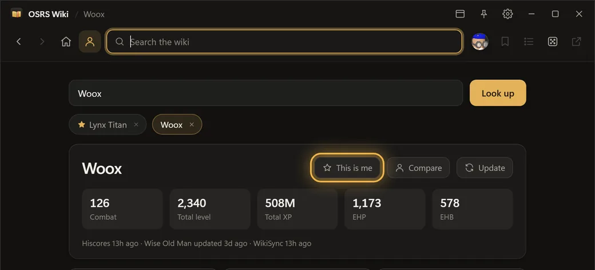
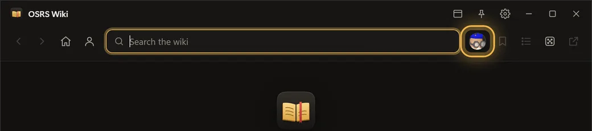
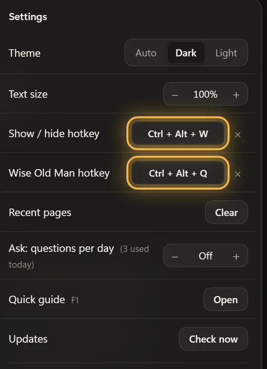
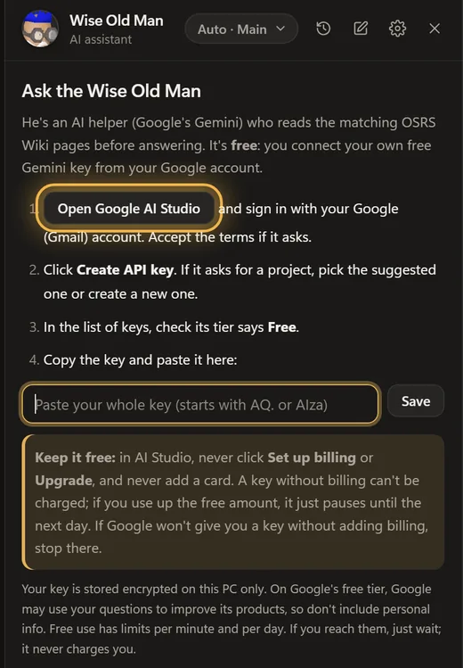
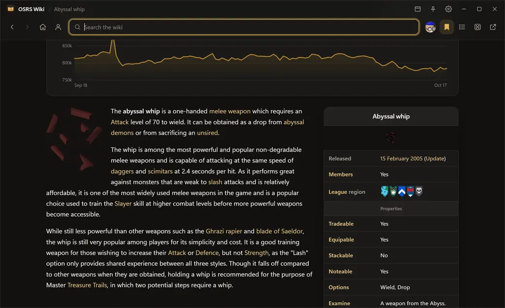

Old School RuneScape Wiki
Search above, or jump straight in.
Bookmarks
Quick links
Recently viewed
Content from the Old School RuneScape Wiki, licensed CC BY-NC-SA 3.0. Unofficial reader, not affiliated with Jagex or the Wiki.
Search above, or jump straight in.
Content from the Old School RuneScape Wiki, licensed CC BY-NC-SA 3.0. Unofficial reader, not affiliated with Jagex or the Wiki.

Get set up in a minute, plus the keys worth knowing.




Keep it free: in AI Studio, never click Set up billing or Upgrade, and never add a card. A key without billing can't be charged; if you use up the free amount, it just pauses until the next day. If Google won't give you a key without adding billing, stop there.

Open this again any time: press F1, or Settings → Quick guide.
OSRS Wiki Reader
Content from the Old School RuneScape Wiki (CC BY-NC-SA 3.0). Unofficial, not affiliated with Jagex or the Wiki.